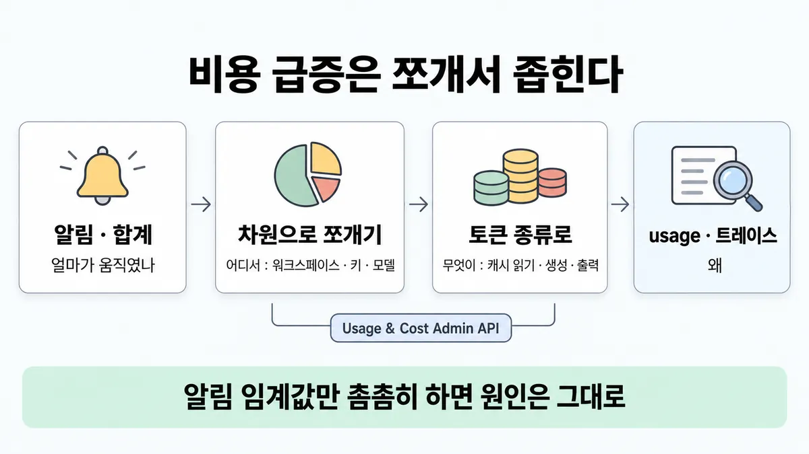
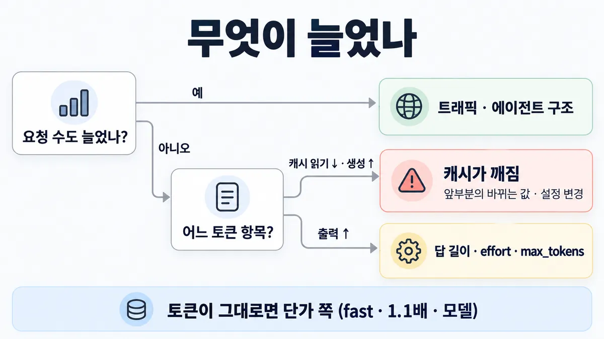
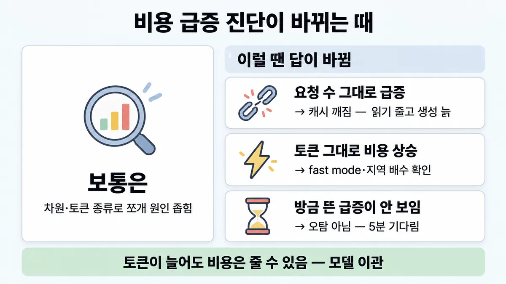

■ 비용 급증 추적
표시가 없는 문장은 공식 문서에서 확인한 내용이에요. 다른 표시는 읽는 법
왜 배우나 — 시험이 요구하는 것
시험 목표 4.6 로깅과 관측으로 감시 · D4 평가 16%Monitor system performance using logging and observability tools
이 개념으로 푸는 판단 (할 수 있어야 하는 것)
- 4.6① 비용 급증 알림이 떴다 — 대시보드만 보면 원인이 나오나? (빈 목표) — 모니터링(무엇이 움직였나)과 관측(왜 — 실행 추적)을 구분해 쓰기
- 1.6③ 한 건에 얼마, 한 달에 얼마? — 비용 축을 숫자로 — 요청당 비용으로 설계안 비교
- 3.4① 수천 세션 중 일부만 30초씩 걸린다 — 모델 호출인지 CRM 도구인지 무엇으로 찾나? — 관측 신호 고르기 (메트릭 · 로그 이벤트 · 트레이스)
한눈에
비용 알림·대시보드 합계는 "얼마가 움직였나"만 말함. 원인은 차원(워크스페이스 · API 키 · 모델 · 서비스 티어 · 속도 · 지역)으로 쪼개 "어디서", 토큰 종류(캐시 안 된 입력 · 캐시 읽기 · 캐시 생성 · 출력)로 "무엇이" 늘었나를 좁힌 뒤, 그 실행의 요청 usage·트레이스로 "왜"를 봄. 순서 = 알림 → 쪼개기 → 해당 실행 → 원인 (도구는 ✓, 순서 자체는 업계 일반)
조직 단위 도구 = Usage & Cost Admin API (Console 의 Usage·Cost 페이지와 같은 데이터를 프로그램으로, Admin API 키)
비유 클라우드 청구 급증. Cost Explorer 로 계정·서비스·태그별로 쪼개고 → 늘어난 줄의 사용 유형(데이터 전송·스토리지)을 보고 → CloudTrail·X-Ray 로 그 호출을 찾음


ELI5
전기 요금이 갑자기 많이 나온 집이에요.
- 요금 고지서 합계만 봐서는 어느 방이 범인인지 몰라요.
- 방마다 계량기를 보면 "어디서" 늘었는지 알아요.
- 그 방에서 에어컨인지 전등인지 보면 "무엇이" 늘었는지 알아요.
- 이 쪽은 "합계는 같은데 요금이 오르는 때" 같은 까다로운 경우를 모아 둔 곳이에요.
개념 설명
원리
모니터링과 추적은 다른 질문에 답함
- 알림·대시보드 합계 = "얼마가 움직였나". 원인은 안 알려 줌.
- 차원별로 쪼개기 = "어디서" (워크스페이스 · API 키 · 모델 · 서비스 티어 · 속도 · 지역).
- 토큰 종류로 쪼개기 = "무엇이" (캐시 안 된 입력 · 캐시 읽기 · 캐시 생성 · 출력).
- 요청 한 건의
usage와 트레이스 = "왜" (어느 단계·어느 설정).
비용 = 토큰 수 × 단가
- 비용이 오르는 길은 둘 : 토큰이 늘거나(요청 수 · 입력 · 출력 · 캐시 깨짐), 단가가 오르거나(모델 · fast mode · 미국 전용 추론).
- 그래서 토큰 그래프가 멀쩡해도 비용이 오를 수 있고, 토큰이 늘어도 비용이 줄 수 있음.
데이터의 한계
- 조직 데이터는 보통 요청 끝나고 5분 안에 반영(가끔 더 늦음). Cost API 는 하루 단위만.
- 청구 정본은 Console 등 제공자. Claude Code 의 비용 메트릭은 근사치.
핵심 질문 두 개
- 토큰이 늘었나, 단가가 올랐나?
- 토큰이 늘었다면 어느 종류(캐시 읽기·생성·일반 입력·출력)가, 어느 차원에서?
규칙과 판단


갈림길
①③⑤ 어느 도구 [4.6①]
Usage API
usage_report/messages — 모델 · 워크스페이스 · 서비스 티어 등으로 거르고 묶음, 1m·1h·1d
Cost API
cost_report — USD, 워크스페이스·description 으로 묶음, 1d 만
응답 usage
input_tokens · cache_creation_input_tokens · cache_read_input_tokens · 출력
Claude Code Analytics API
사용자별 예상 비용 · 생산성 지표
② 무엇이 늘었나 [4.6①] [1.6③]
트래픽 · 루프
쓰는 곳이 늘었나(워크스페이스·API 키) · 에이전트 구조가 바뀌었나 (◆ 단일 vs 멀티 에이전트) 업계 일반
캐시가 깨짐
앞부분에 매번 바뀌는 값(날짜 등) · thinking·effort 설정 변경 · 수명 지남 (■ 프롬프트 캐싱)
답 길이 · effort · max_tokens 부터
답 길이 · 높은 effort · max_tokens (■ max_tokens 와 긴 출력)
단가 쪽
fast mode(speed) · 미국 전용 추론 1.1배(inference_geo) · 모델 바뀜
④⑤ 숫자가 안 맞음 [4.6①]
청구 정본은 Console 등 제공자
Claude Code 비용 메트릭은 근사치
반영 지연
보통 요청 끝나고 5분 안, 가끔 더 늦음
사용량 쪽으로
Cost API 에 없음 → Usage API 의 service_tier = priority
기본 워크스페이스 · 플레이그라운드
기본 워크스페이스 = workspace_id null · 콘솔 플레이그라운드 = api_key_id null
나머지 규칙
-
원인 찾자고 프롬프트·응답 원문을 기본으로 다 남기지 않음 → 기본은 구조만 (■ 텔레메트리 기록 범위)
규칙 원문 ①②③④⑤ (갈림길로 그린 규칙)
-
조직 단위 = Usage & Cost Admin API (Admin API 키
sk-ant-admin01-...) [4.6①]엔드포인트 단위 거르기·묶기 시간 버킷 /v1/organizations/usage_report/messages토큰 API 키 · 워크스페이스 · 모델 · 서비스 티어 · 컨텍스트 창 · 데이터 레지던시( inference_geo) · 속도(speed, 베타)1m·1h·1d/v1/organizations/cost_reportUSD 워크스페이스 · description(모델 · inference_geo파싱)1d만토큰 종류를 따로 셈 : 캐시 안 된 입력 · 캐시된 입력 · 캐시 생성 · 출력 · 웹 검색 등 서버 도구 사용도
Enterprise 조직(claude.ai)은 Admin API 키가 없음 → Enterprise Analytics API 키
-
늘어난 줄 → 먼저 볼 곳 (각 원인 =, 짝짓기 자체는 업계 일반) [4.6①] [1.6③]
늘어난 것 먼저 볼 곳 캐시 읽기 ↓ · 캐시 생성·일반 입력 ↑ 캐시가 깨짐 — 앞부분에 매번 바뀌는 값(날짜 등) · thinking·effort 설정 변경(메시지 캐시 무효화) · 수명 지남 (■ 프롬프트 캐싱) 출력 ↑ 답 길이 · 높은 effort · max_tokens(■ max_tokens 와 긴 출력)특정 모델 ↑ 라우팅·기본 모델이 바뀜 · 새 토크나이저는 같은 글에 약 30% 더 (■ per-request cost) speed= fast ↑fast mode 요금 (Opus 5.5 $8/$40 — 표준의 2배) inference_geo= us ↑모든 토큰 1.1배 특정 워크스페이스·API 키 ↑ 그 팀·서비스로 좁혀 요청 단위로 요청 수 ↑ 트래픽 · 에이전트 구조 (에이전트 약 4배 · 멀티 약 15배, 채팅 대비 → ◆ 단일 vs 멀티 에이전트) -
요청 한 건 : 응답
usage(스트리밍이면message_start) —input_tokens= 캐시에서 읽지도, 캐시에 쓰지도 않은 입력(마지막 break point 뒤) ·cache_creation_input_tokens·cache_read_input_tokens. 어느 단계(검색(retrieval)·도구·생성)가 먹었나 = 트레이스 → ■ observability 세 신호 -
숫자 믿기 : 청구 정본은 Console 등 제공자, Claude Code 비용 메트릭은 근사치 · 반영은 보통 5분 안(가끔 더 늦음) · 폴링은 분당 1회가 지속 사용 기준, 대시보드는 결과를 캐시 · Cost API 에 없는 것 = Priority Tier 비용(Usage API
service_tier로) · 코드 실행은 Cost API 에만(Code Execution Usage) -
누가 썼나 : Claude Code 사용자별 = Claude Code Analytics API · 키가 많은 일반 API = Usage API 토큰을 비용 대용으로 · Claude Code 메트릭은
skill.name·plugin.name·agent.name으로 지출을 스킬·플러그인·서브에이전트에 귀속, 흔한 알림 = 비용 급증 · 이상한 토큰 소비 · 기본 워크스페이스 =workspace_idnull · 플레이그라운드 =api_key_idnull
더 깊이 : 판단 규칙 · 상황 변수 (설명)
판단 규칙
| 조건 | 답 | 근거 |
|---|---|---|
| 조직 토큰을 모델·워크스페이스·서비스 티어별로 | Usage API usage_report/messages | usage-cost-api "Track token consumption across your organization with detailed breakdowns by model, workspace, and service tier" |
| 토큰을 종류별로 | 캐시 안 된 입력 · 캐시된 입력 · 캐시 생성 · 출력 따로 | usage-cost-api |
| 더 좁히기 | API 키 · 워크스페이스 · 모델 · 서비스 티어 · 컨텍스트 창 · 데이터 레지던시 · 속도로 거르고 묶음 | usage-cost-api |
| 달러로 · 부서별 청구 나누기 | Cost API cost_report (USD, 1d 만) | usage-cost-api |
| 요청 한 건 | 응답 usage 의 세 입력 필드 + 출력 | prompt-caching |
| 캐시 읽기가 0 으로 떨어짐 (전엔 적중) | thinking·effort 설정 변경을 의심 | thinking-troubleshooting |
| Priority Tier 비용 | Usage API service_tier = priority (Cost API 에 없음) | usage-cost-api |
| Claude Code 사용자별 비용 | Claude Code Analytics API | usage-cost-api |
| Claude Code 비용 메트릭을 청구에 | 쓰지 않음 — 근사치 | monitoring-usage |
| 스킬·플러그인·서브에이전트별 지출 (Claude Code) | skill.name · plugin.name · agent.name 속성 | monitoring-usage |
| Enterprise(claude.ai) 조직 | Analytics API 키 (Admin API 키 없음) | usage-cost-api |
상황 변수
| 변수 | 값 | 답 쪽 | 등급 | 근거 |
|---|---|---|---|---|
| 요청 수 | 늘어남 | 트래픽 · 에이전트 구조 변화 | 업계 일반 | ◆ 단일 vs 멀티 에이전트(에이전트 약 4배 · 멀티 약 15배) |
| 캐시 읽기 · 생성 | 읽기 ↓ 생성 ↑ | 캐시가 깨짐 | 계산 | 뒤집히는 때 1 |
| 토큰 | 그대로, 비용 ↑ | 단가 쪽 (speed · inference_geo · 모델) | 계산 | 뒤집히는 때 2 |
| 토큰 | 늘었는데 모델을 옮긴 직후 | 새 토크나이저일 수 있음 — 비용은 오히려 줄 수도 | 계산 | 뒤집히는 때 3 |
| 급증 시각 | 방금 (5분 안) | Usage API 에 아직 없을 수 있음 → 요청 usage·앱 로그 | 업계 일반 | 뒤집히는 때 4 |
| 도구 | Claude Code 팀 사용 | Claude Code Analytics API · OTel 비용 메트릭(근사치) | usage-cost-api · monitoring-usage | |
| 서비스 티어 | Priority | Usage API 로만 | usage-cost-api | |
| 비용 종류 | 코드 실행 | Cost API 의 Code Execution Usage 로만 | usage-cost-api | |
| 워크스페이스 | 기본 | workspace_id null | usage-cost-api |
연습 문제
고객지원 Agent 의 하루 비용이 요청 수는 하루 3만 건 그대로인데요청 수 그대로 약 6배로 뛰었다. Usage API 를 토큰 종류로 쪼개 보니 캐시 읽기는 0 근처로 떨어지고 캐시 생성이 튀었다캐시 읽기 ↓. 팀원은 알림 임계값을 더 촘촘히 걸자고 한다. 원인은 어디부터 볼까?
시험 대비
함정
- "대시보드(메트릭) 합계만 보면 원인이 나온다" → 합계는 '얼마가' 만 답하고, '어디서·왜' 는 쪼개기·트레이스가 답함
- "알림 임계값을 더 촘촘히" → 알림이 늘 뿐 원인은 그대로 업계 일반
- "모든 프롬프트·응답 원문을 기본 저장해 두고 뒤진다" → 기본은 구조만, 승인된 파이프라인만 (■ 텔레메트리 기록 범위)
- 캐시 적중이 무너진 급증을 "트래픽 증가"로 봄 → 요청 수 그대로 · 캐시 읽기 ↓ 생성 ↑ 면 캐시가 깨짐
- Claude Code 비용 메트릭을 청구 근거로 → 근사치, 청구는 Console 등
- Cost API 로 Priority Tier 비용을 찾음 → 없음, Usage API
service_tier - 방금 뜬 급증이 API 에 안 보이니 "오탐" → 반영이 보통 5분 안, 더 늦을 수 있음
- 토큰이 그대로라 "비용 변화 없음"으로 닫음 → 단가 쪽(fast · 미국 전용 1.1배 · 모델)도 봄
신호
"Track token consumption across your organization with detailed breakdowns by model, workspace, and service tier"
"Measure uncached input, cached input, cache creation, and output tokens"
"Filter by API key, workspace, model, service tier, context window, data residency, or speed (beta), and group results by these dimensions"
"Usage and cost data typically appears within 5 minutes of API request completion, though delays may occasionally be longer."
"Cost metrics are approximations. For official billing data, refer to your API provider"
"Priority Tier costs are not available in the cost endpoint."
"cache_read_input_tokens falls to zero on requests that previously hit the cache."


더 깊이 : 뒤집히는 때 · 오답 재료 (설명)
뒤집히는 때
1. "비용이 급증 = 트래픽이 늘었다" 가 틀리는 때 — 캐시가 깨짐
- 조건 : Sonnet 5 · 고정 앞부분 1만 2천 토큰 · 질문 400 · 출력 250 · 하루 3만 요청. 요청 수는 그대로인데 하루 비용이 급증.
- 계산 (백만 토큰당 입력 $2 · 출력 $10 · 5분 쓰기 $2.50 · 읽기 $0.20) :
- 적중 때 = 12,000 × $0.20 + 400 × $2 + 250 × $10 = $0.0024 + $0.0008 + $0.0025 = $0.0057 → 하루 $171
-
매번 새로 쓰기 = 12,000 × $2.50 + $0.0008 + $0.0025 = $0.0333 → 하루 $999 (약 5.8배)
-
판단 : 요청 수·출력이 그대로면 트래픽이 아님. Usage API 를 토큰 종류로 쪼개면 캐시 읽기가 0 근처 · 캐시 생성이 하루 약 3억 6천만 토큰으로 튐 → 캐시가 깨짐. 먼저 볼 것 : 최근 thinking·effort 설정을 바꿨나 · 앞부분에 날짜 같은 바뀌는 값이 들어갔나.
- 전제 : 요청마다 캐시 쓰기가 일어난다고 봄(호출 간격이 수명 안) · 가격 = 2026-09-28 조회값.
- 등급 : 계산 (배수·증상·원인은 확인)
- 근거 : prompt-caching 표 · usage-cost-api · thinking-troubleshooting
2. 토큰 그래프는 그대로인데 비용이 오르는 때
- 조건 : Opus 5.5 · 월 입력 2억 · 출력 3천만 토큰, 토큰 수는 지난달과 같음.
- 계산 :
- 표준 = 200 × $4 + 30 × $20 = $800 + $600 = $1,400
- 미국 전용 추론(
inference_geo: "us") = × 1.1 → $1,540 - fast mode = 200 × $8 + 30 × $40 = $2,800 (2배)
-
둘 다 = × 1.1 → $3,080 (fast mode 에도 지역 배수가 곱해짐)
-
판단 : 토큰만 보면 "변화 없음". Usage API 를
speed·inference_geo· 모델로 묶어야 보임. 누가 fast mode 를 켰는지는 워크스페이스·API 키로 좁힘. - 등급 : 계산 (단가·배수는 확인)
- 근거 : pricing · usage-cost-api
3. 토큰 알림이 울렸는데 비용은 준 때 — 모델 이관
- 조건 : Sonnet 4.6($3/$15)에서 Sonnet 5($2/$10)로 옮김. 같은 글을 새 토크나이저가 약 30% 더 셈. 지난달 입력 1억 · 출력 2천만.
- 계산 :
- 이관 전 = 100 × $3 + 20 × $15 = $300 + $300 = $600
-
이관 뒤 = 130 × $2 + 26 × $10 = $260 + $260 = $520 (토큰은 30% 늘고 비용은 약 13% 줄어듦)
-
판단 : 토큰 수 알림만 걸어 두면 "급증"으로 오판. 비용은 Cost API(USD)로, 토큰은 모델별로 나눠 같이 봄.
- 전제 : 출력도 같은 비율로 30% 늘었다고 봄(내용 따라 다름) · 가격 = 2026-09-28 조회값.
- 등급 : 계산
- 근거 : 릴리스 노트 · prompt-caching 표
4. 방금 뜬 급증이 조직 데이터에 안 보이는 때
- 조건 : 알림이 3분 전에 떴는데 Usage API 에 아직 없음.
- 판단 : 반영은 보통 요청 끝나고 5분 안, 가끔 더 늦음 → "오탐"으로 닫지 않음. 기다리는 동안은 내 앱이 남긴 요청
usage(응답마다 옴)로 봄 (앱 쪽 계측은 업계 일반). 폴링은 분당 1회가 지속 사용 기준. - 등급 : (5분 · 분당 1회) · 업계 일반 (앱 쪽 계측)
- 근거 : usage-cost-api · prompt-caching
5. 사용자·스킬별로 나눠야 하는 때
- 조건 : 사내 개발자 수백 명이 Claude Code 를 쓰고, 비용이 누구·어느 스킬에서 늘었는지 알아야 함.
- 판단 : API 키를 사람마다 나눠 Usage API 로 쪼개는 건 느림 → Claude Code Analytics API(사용자별 예상 비용). OTel 비용 메트릭은
skill.name·plugin.name·agent.name으로 귀속하되 근사치라 청구 정본은 Console. - 근거 : usage-cost-api · monitoring-usage
오답 재료
| 오답 | 왜 끌리나 | 왜 틀리나 | 등급 | 근거 |
|---|---|---|---|---|
| "비용 대시보드를 보면 원인이 나온다" | 숫자가 다 있어 보임 | 합계는 얼마가 움직였는지만. 차원·토큰 종류로 쪼개고 해당 실행을 봐야 | usage-cost-api · ■ observability 세 신호 | |
| "알림 임계값을 더 촘촘히" | 빨리 알면 해결될 것 같음 | 알림만 늘고 원인은 그대로 | 업계 일반 | 목록 4.6① "매력적인 오답" |
| "모든 프롬프트·응답 원문을 기본 저장해 두고 뒤진다" | 다 있으면 안심 | 기본은 구조만, 승인된 파이프라인만. 규제 환경이면 보존 문제 | ■ 텔레메트리 기록 범위 · monitoring-usage | |
| "요청 수가 그대로니 비용 급증은 오류" | 트래픽만 원인으로 봄 | 캐시가 깨지면 요청 수 그대로 약 5.8배 | 계산 | 뒤집히는 때 1 |
| "토큰이 그대로면 비용도 그대로" | 비용 = 토큰으로 외움 | fast mode 2배 · 미국 전용 1.1배 · 모델 단가 | 계산 | 뒤집히는 때 2 |
| "토큰이 30% 늘었으니 비용 급증" | 토큰 알림이 울림 | 새 토크나이저 이관이면 비용은 줄 수도 | 계산 | 뒤집히는 때 3 |
| "Claude Code 비용 메트릭으로 부서에 청구" | 숫자가 USD 로 나옴 | 근사치, 청구 정본은 제공자 | monitoring-usage | |
| "Cost API 로 Priority Tier 비용을 본다" | 비용이니 Cost API | Cost API 에 없음 → Usage API service_tier | usage-cost-api |
참고
개념
출처
- 가이드 목표 4.6 공식 시험 가이드 v1.0
- usage-cost-api
- prompt-caching
- thinking-troubleshooting
- pricing
- monitoring-usage
- 릴리스 노트
- multi-agent-research-system
상태
- 업계 일반 3줄(조사 순서 · ② 짝짓기 · 임계값 함정)
미해결
- 목록 4.6① 의 "root trace 아래 검색·도구·생성 span, 토큰·지연·TTFT·stop_reason·도구 호출" 필드 목록은 목록 스스로 "영상 기준 — 근거 확인 필요"라고 적음. 직접 API 앱용 공식 필드 목록은 받은 원문에 없음 → 카드는 Claude Code·Agent SDK 트레이스(■ observability 세 신호)로 가리키기만.
- Usage API 가 요청 수(건수)를 주는지 : 받은 원문 key concepts 에는 토큰만 있음(usage-cost-api) → 카드는 요청 수를 앱·게이트웨이 로그로 봄(업계 일반).
- Cost API 의
description묶음에서 fast mode·Priority 가 어떻게 찍히는지 : 원문엔model·inference_geo파싱만 나옴. - 영어 신호 "User prompt content is not collected by default. Only prompt length is recorded." 는 monitoring-usage에 있음 — 본문은 ■ 텔레메트리 기록 범위 몫이라 여기선 인용 안 함.